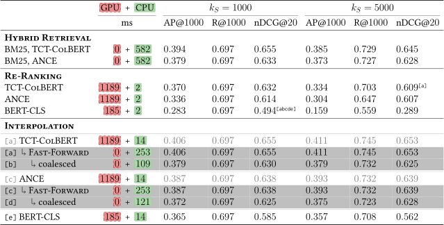

Efficient Neural Ranking
using Forward Indexes and Lightweight Encoders
Jurek Leonhardt, Henrik Müller, Koustav Rudra, Megha Khosla, Abhijit Anand, Avishek Anand
Retrieve-and-re-rank
Retrieve-and-re-rank is a telescoping setting that has two stages.
📚
Corpus
→
1
Lexical retrieval
→
📄📄📄📄📄
📄📄📄📄📄
📄📄📄📄📄
📄📄📄📄📄
Candidates
→
2
Semantic re-ranking
→
#1 D371 (0.95)
#2 D222 (0.85)
#3 D984 (0.71)
Final ranking
Dense retrieval
Dense retrieval uses semantic models directly for retrieval.
Documents and query are embedded in a common vector space using dual-encoder models.
Retrieval is performed as an (approximate) nearest neighbor search operation.
The vector space is often 768-dimensional.
Motivation
Sparse retrieval is fast, but not competitive on its own.
Dense retrieval shows good nDCG, but recall suffers and it is slow.
Re-ranking using dense retrieval models works well.
Score interpolation further helps:
$\phi (q, d)$ $= \alpha$ $\phi_S (q, d)$ $+\ (1 - \alpha) $ $\phi_D(q, d)$


Results on the TREC Deep Learning document ranking task.
Fast-Forward indexes
$\phi (q, d) = \alpha \cdot \phi_S (q, d) + (1 - \alpha) \ \cdot $ $\phi_D(q, d)$
Our approach: Efficient re-ranking with dual encoders.
A Fast-Forward index is a look-up table for pre-computed document representations:
$\phi_D^{FF} (q, d)$ $= \zeta (q) \cdot \eta^{FF} (d) $
Fast-Forward indexes
The look-up operation is much more efficient than actual re-ranking:

TCT-ColBERT on the TREC-DL 2019 document ranking task.
Passage ranking results

Passage ranking results. Latency measured on CPU.
Coming up: Techniques to improve efficiency even further.
MaxP indexes
Long documents are often chunked into passages and scored using a $\max$ operation:
$\phi_D^{FF} (q, d) = \max_{p_i \in d} (\zeta (q) \cdot \eta^{FF} (p_i))$
We propose sequential coalescing to compress maxP indexes.
Sequential coalescing

Look-up operation in a coalesced index.
Long documents are often chunked into passages, so they have multiple representations.
Sequential coalescing merges similar representations of subsequent passages within a document.
Sequential coalescing

TCT-ColBERT on TREC-DL 2019 document ranking with sequential coalescing.
Sequential coalescing

Results on the TREC-DL 2019 document ranking task.
Early stopping
Many tasks require only a small number of documents (e.g., the top-$10$).
Lexical (sparse) and semantic (dense) scores are usually correlated.
In many cases, it is not necessary to compute all semantic scores.
We propose an approach for early stopping.
Early stopping

The early stopping approach illustrated.
Early stopping

ANCE on TREC-DL 2019 passage ranking with early stopping.
Early stopping

Results on the TREC-DL 2019 passage ranking task.
Efficient encoders
Queries and documents have different characteristics in terms of length and complexity.

The distribution of query and passage lengths in the MS MARCO corpus.
We propose encoders to deal with these charactertistics more efficiently.
Efficient query encoders
Queries are short and concise, but query encoders are usually based on complex self-attention-based Transformer models.

Self-attention-based query encoder.
Hyperparameters:
- Number of layers $L$
- Number of attention heads $A$
- Representation size $H$
$\text{BERT}_\text{base}$: $L=12$, $A=12$, $H=768$. Can we go lower?
Efficient query encoders
Lightweight query encoders can achieve similar performance, but it depends on the dataset:

Query encoding latency in seconds.

nDCG@10 on MSM-Psg-Dev.

nDCG@10 on TREC-DL-Psg’19.

nDCG@10 on TREC-DL-Psg’20.
Selective document encoders
Documents are often long; encoding (indexing) is expensive.
Complex encoders are required to capture the semantics of the documents.
Can we shorten documents instead?
[...]
This is a
web article
which is
unnecessarily long
and
contains
ads, repetitions, and, finally, some
useful content.
[...]
Example document.
Selective document encoders

Selective document encoder.
Selective document encoders dynamically shorten batches of input documents during inference.
Each document token is assigned a score, and the lowest scoring tokens are removed.
The degree to which documents are shortened is controlled by a hyperparameter $p \in [0,1]$.
Selective document encoders
Selective document encoders incur a small performance hit, but decrease the indexing latency notably:

Encoding latency, batch size: 256.

Performance on MSM-Psg-Dev.
Summary
- We proposed Fast-Forward indexes for efficient and effective neural re-ranking.
- We showed how efficiency can be improved using early stopping and sequential coalescing techniques.
- We introduced lightweight encoders for both queries and documents.

Backup slides
Sequential coalescing
$p_0$
$p_1$
$\mathcal{A}$
$p_2$
$\mathcal{A}$
$\hat{p}_1$
$p_3$
$\hat{p}_2$
$p_4$
$\hat{p}_3$
$p_5$
$p_6$
$\mathcal{A}$
$\hat{p}_4$
All passage representations of a document in the embedding space.
def coalesce(P):
P_new = []
A = []
A_avg = None
first_iteration = True
for p in P:
if first_iteration:
first_iteration = False
elif distance(p, A_avg) >= delta:
P_new.append(A_avg)
A = []
A.append(p)
A_avg = np.mean(A, axis=0)
P_new.append(A_avg)
return P_new
Early stopping ($k=3$)
We set $\alpha = 0.5$:
$\phi (q, d) = 0.5 \cdot \phi_S (q, d) + 0.5 \cdot \phi_D (q, d)$
Stop the computation once the highest possible score $\phi_{\text{max}} (q, d)$ is too low to make a difference.
$\phi_D$ is not normalized. We approximate its maximum as the highest observed score:
$\phi_{\text{max}} (q, \text{D224}) = 0.5 \cdot 0.73 + 0.5 \cdot 0.67 = 0.70$
| $\phi_S$ | $\phi_D$ | $\phi$ ↓ | |
|---|---|---|---|
|
|
|
|
|
|
|
|
Ranked documents.
Early stopping ($k=3$)
We set $\alpha = 0.5$:
$\phi (q, d) = 0.5 \cdot \phi_S (q, d) + 0.5 \cdot \phi_D (q, d)$
Stop the computation once the highest possible score $\phi_{\text{max}} (q, d)$ is too low to make a difference.
$\phi_D$ is not normalized. We approximate its maximum as the highest observed score:
$\phi_{\text{max}} (q, \text{D224}) = 0.5\ \cdot$ $0.73$ $ +\ 0.5\ \cdot$ $0.67$ $ \gt $ $0.68$
| $\phi_S$ | $\phi_D$ | $\phi$ ↓ | |
|---|---|---|---|
|
|
|
|
|
|
|
|
Ranked documents.
Early stopping ($k=3$)
We set $\alpha = 0.5$:
$\phi (q, d) = 0.5 \cdot \phi_S (q, d) + 0.5 \cdot \phi_D (q, d)$
Stop the computation once the highest possible score $\phi_{\text{max}} (q, d)$ is too low to make a difference.
$\phi_D$ is not normalized. We approximate its maximum as the highest observed score:
$\phi_{\text{max}} (q, \text{D105}) = 0.5\ \cdot$ $0.49$ $ +\ 0.5\ \cdot$ $0.71$ $ \lt $ $0.72$
| $\phi_S$ | $\phi_D$ | $\phi$ ↓ | |
|---|---|---|---|
|
|
|
|
|
|
|
|
Ranked documents.